The script adds a single toolbar to the geocaching.com maps and turns them into a flexible map workbench:
Any background map – Kartverket topographic maps, OpenStreetMap, aerial photos and more, or any map service you add yourself (XYZ/TMS tiles, WMTS, WMS, ArcGIS).
Overlays on top of the map – hiking and ski routes, property boundaries and hillshade.
Dimming – fade the background map towards white so caches stand out.
Search for Norwegian place names and addresses (Kartverket), places abroad (OpenStreetMap data via Photon), or coordinates – in one list.
Coordinates under the mouse in DMM, DD, DMS and UTM (the local zone), with copy buttons.
Measuring distance and bearing, and projecting waypoints.
Routes – pick geocaches and pins from a searchable list or straight on the map, put them in order, preview the route and download it as a GPX route for your GPS. NEW
A cache list of the geocaches on the map you see, that follows the map (/map). NEW
Favourite points, D/T and an FTF badge right on the map, and named pins you can export as GPX.
161 m circles around traditional caches, solved caches and visible physical stages, or a single circle anywhere.
My location, a home button that takes you to your home address, and fullscreen.
A button that hides all geocaches for a clean map, and shows them again.
Your chosen map also appears on the small map on cache pages.
The whole interface is available in English and Norwegian.
The site's own zoom, location and map buttons are folded into the same toolbar, so there are no duplicate buttons.
2. Installation
Install a userscript manager in your browser: Tampermonkey or Violentmonkey (Chrome, Edge, Firefox, Safari).
Open the file geocaching-custom-tiles.user.js in the browser, or create a new script in the manager and paste the file's content. Save it.
Open a geocaching.com map. The toolbar appears at the right edge of the map.
Only your chosen background map and overlays on the small map – no controls.
The toolbar finds a free place at the right edge by itself, below site buttons such as “Create Route”; site buttons it does not replace are moved to its bottom and keep working. The script needs no special permissions (@grantnone). All settings are stored in the browser for geocaching.com, so they are shared between the map pages and cache pages.
3. The toolbar
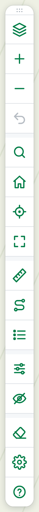
The toolbar.
Button
What it does
Map layers – opens the layer panel; click again to close.
Zoom in / out. Greyed out at the map's limits.
Previous view – back one step at a time to where you were, up to 10 steps (every zoom step and pan counts). Greyed out when there is nothing to go back to.
Find your way
Find a place – place names, addresses, coordinates or GC codes. Shortcut /.
Go home. Right-click the button to change the address.
Show my location, with an accuracy circle.
Fullscreen map. Click again to leave.
Tools
Measure distance and bearing. Click points on the map; a click on a geocache snaps to its coordinates.
Route – build a route of geocaches and pins and download it as GPX (section 11). Green edge while the window is open.
Geocaches on the map – a list that follows the map (/map only, section 11). Green edge while the list is open.
Print the map – what the map shows now: background, overlays, caches, favourite points, D/T and what you have drawn (measurements, circles, pins, the route), with a title of your own, a scale bar and the map's attribution – landscape when the map is wider than tall. Tick Parallels and meridians for grid lines at a round interval that suits the scale, with the latitudes and longitudes written in the margin around the map (for the route printout too). The page opens in a new tab; print it or save it as a PDF.
What is shown
Show on map – 161 m circles, marks at solved caches, favourite points, D/T, FTF and type icons (below). Green edge while the panel is open.
Hide all geocaches; click again ( ) to show them.
The rest
Clear all drawings – pins, measurements, projections, single circles – and the route, if you have one: the script then asks whether it should be forgotten too.
Settings – layout, language and how the script behaves.
Help – a one-page overview, with a link to this guide.
Placing the toolbar
The toolbar can sit on the right (default) or left side of the map, or at the top or bottom – in oneor two rows. It is centred along its edge (vertically on the sides, sideways at the top and bottom) in the visible part of the map, and moves to the nearest free spot if another control is in the way. In full screen it sits right at the screen edge. When one row doesn't fit – a narrow window, or beside the site's open sidebar – the toolbar uses two rows by itself, and goes back to one when there is room (Settings then shows Two lines (automatic)). Choose in Settings, or drag the toolbar by its grip (the dots at its top or left end): a dashed blue area shows the edge it will snap to. The choice is remembered – separately for /map and /play/map. At the top or bottom the toolbar always stays centred; a site button in the way (like Search this area) makes it move just below (or above) it.
On the left, top and bottom the toolbar keeps clear of the site's Search forgeocaches panel and follows it as it opens and closes.
At the bottom, when the toolbar would cover the zoom and coordinate readout, the readout moves to the top left – and back when the toolbar moves elsewhere. The scale bar may be covered.
The layer panel and all dialogs open besidethe toolbar, never on top of it or other controls: to its left or right, below it at the top, above it at the bottom. At the bottom they grow upwards, so search results stay visible.
Drag the layer panel, the dialogs and Showon map by their title bar to any place in the window. They open where you last left them, also in a later session.
Site buttons the toolbar takes in are laid out in the same row or column.
Show on map
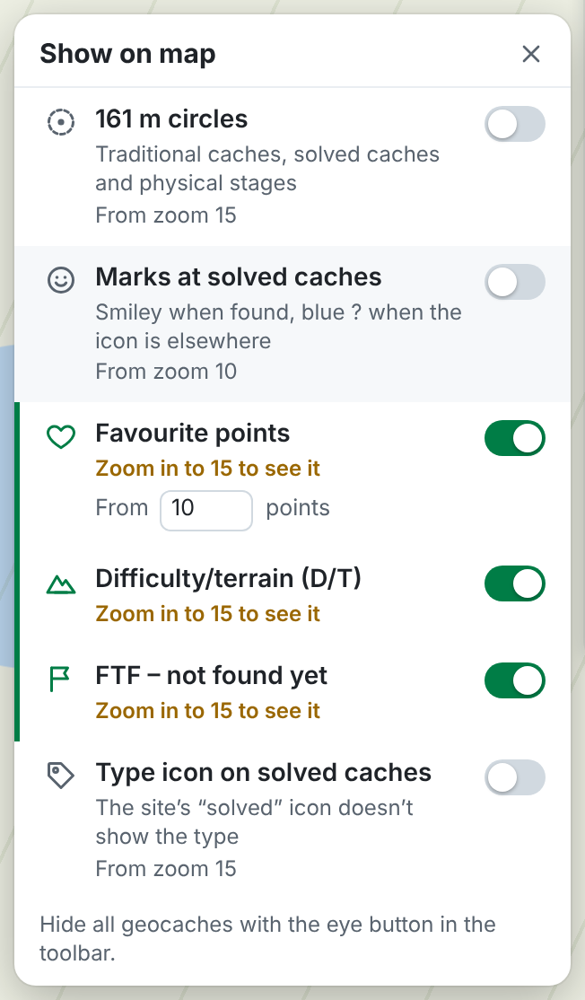
Show on map.
Show on map opens a small panel with a switch for everything the script draws on top of the caches:
161 m circles (red) – traditional caches, solved caches and physical stages, from zoom 15 (section 13).
Marks at solved caches – a smiley when found, a blue ? when the icon is elsewhere, from zoom 10.
Favourite points – ♥ and the number above caches, from a lowest number (10 by default), from zoom 15.
D/T – difficulty/terrain below the caches, from zoom 15.
FTF – a red badge on active caches nobody has found yet, from zoom 15.
Hide the site's icon at the postedcoordinates (/play/map only) – for solved caches you have found, only our smiley at the solved spot is left; the site's icon at the posted coordinates is never drawn. Works while the marks are on; off by default. (On /map the icons are part of the map images and can't be hidden one by one.)
Type icon on solved caches – the site's “solved” icon doesn't show the type, so a small type icon is added at its bottom right, from zoom 15; off by default.
Each switch says which zoom it shows from; when one is on but you are zoomed out too far, it says Zoom in to 15 to see it. Drag the panel by its title bar; Esc or a click outside closes it.
Help, touch screens and keys
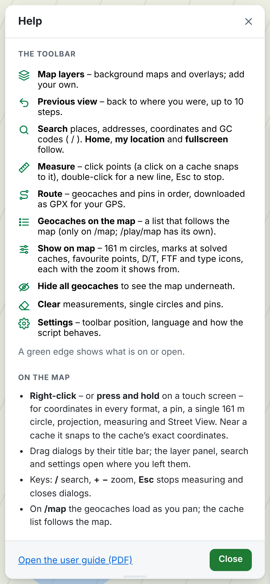
Help.
Help gives a one-page overview of the buttons, the right-click menu, the keys and the differences between /map and /play/map, with a link to this guide in your language.
On a touch screen (iPad, phone), press andhold the map for half a second to open the same menu as a right-click – coordinates, pin, single circle, projection, measuring and Street View, snapped to a nearby cache.
Keys: / search, +− zoom, Esc stops measuring and closes dialogs and panels.
Switching between /map and /play/map
When you go from one map to the other (within 5 minutes), the map you arrive at opens with the same view – centre and zoom (half zoom levels from /play/map are rounded on /map) – and the site's side panel folded or open as on the map you came from. The map stays invisible for a moment until it stands at that view, so you never see the site's own first view. Reloading the same map, or arriving later, works as before.
Search this area on /play/map
/play/map only shows the caches the site has searched for. From zoom 15 the script presses Search this area for you when you have moved the map and it has stood still for a moment – sparingly, since the site only allows a few searches a minute: only when at least a third of the view is new, and at most one press every 8 seconds. If a search comes back without any cache icons (the site has had too many searches), the script waits 30 seconds – longer if it happens again, up to 10 minutes – and then presses once more, so the icons come back by themselves. Below zoom 15 you press the button yourself.
4. Choosing map layers
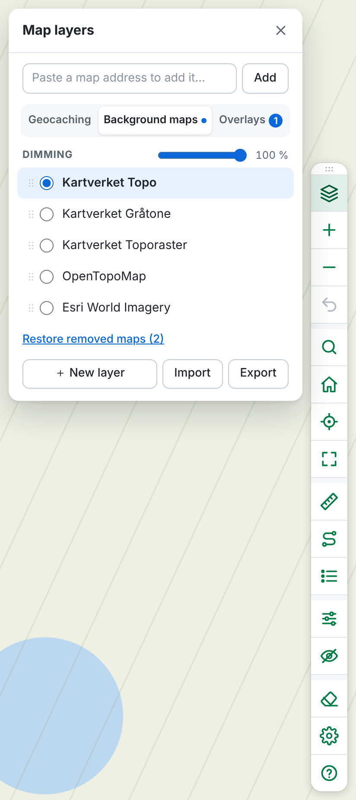
The layer panel's Background maps tab with Kartverket Topo selected; one overlay is on and two built-in maps have been removed. Drag the handle at the left of a row to change the order.
Click to open the panel. The maps are sorted into three tabs:
Geocaching – geocaching.com's own maps (for example Google Maps or the site's map styles), its own overlays, and Geocaching.com map styles… on pages where the site has that menu.
Background maps – the built-in background maps and your own.
Overlays – the built-in overlays and your own.
A blue dot shows which tab holds the background map in use, and the Overlays tab shows how many overlays are switched on. The panel opens on the tab you used last.
Background map
Choose one background, in either of the two background tabs.
Dimming the background
The Dimming slider (in both background tabs) dims the selected background map: drag it left and the map fades towards white, by at most 50 %. The value is shown in per cent. It follows you when you switch maps, and also works on geocaching.com's own maps. Your background map is always drawn fully opaque, so the geocaching.com map never shines through. Cache icons and overlays are never dimmed.
Overlays
Tick any number of overlays. The Opacity slider sets the opacity of all selected overlays (50–100 %); a layer with its own default keeps it relative to the slider (hillshade stays at 60 % of the slider's value). Overlays are always drawn above the background and below the caches – and among themselves in the order of the list: the one at the top is drawn on top.
Changing the order
Every row has a handle at the left. Drag it up or down to move the map; or click the handle and use ↑↓. The order is remembered for each tab.
Editing and tidying the lists
on a built-in layer makes an editable copy.
edits and deletes one of your own layers.
on a built-in map – or on one of geocaching.com's own maps – removes it from the list. A geocaching.com overlay that is switched on is switched off. Restore removed maps (n) brings them all back.
The box at the top adds a layer straight from a pasted address.
The selected map and overlays are highlighted in blue. The buttons appear when you point at a row. Deleting or removing a map asks first, in a small dialog with a red button to confirm.
Bottom of the panel
Restore removed maps (n) – shown when you have removed maps.
＋ New layer, Import, Export.
Your choices are remembered and also used on cache pages.
5. Built-in layers
Name
Type
Source and notes
Kartverket Topo
Background Kartverket's topographic map (WMTS cache, Web
Mercator).
Kartverket Gråtone
Background Greyscale topographic map – caches stand out well.
Kartverket Toporaster
Background Classic raster topographic map.
OpenTopoMap
Background Worldwide topographic map from OpenStreetMap
data and SRTM.
Esri World Imagery / Esri flyfoto
Background Aerial and satellite photos, worldwide.
OpenStreetMap
Background Standard OSM map.
Esri World Topo
Background Worldwide topographic map.
Turruter (Kartverket)
Overlay · WMS
Official hiking, ski, cycling and other routes (layer Ruter in the Tur- og friluftsruter service).
Eiendomsgrenser (Kartverket)
Overlay · WMS
Property boundaries and gnr/bnr from the open cadastre service (CC BY 4.0). Shown from zoom 14.
Hillshade (Esri) / Terrengskygge
Overlay
Terrain relief, blended into the map (60 % by default).
Norge i bilder aerial imagery is not included: Kartverket is closing its open tile service, and access is limited to Norge digitalt partners. Use Esri World Imagery for aerial photos.
6. Adding your own layers
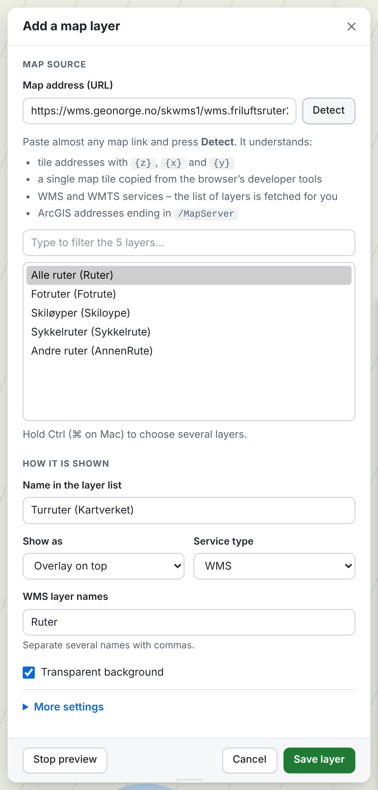
Adding Kartverket's Tur- og friluftsruter WMS: the layer list was read automatically.
Use ＋ New layer, or paste an address into the box at the top of the panel. Press Detect, or simply paste – the editor recognises:
Tile templates with {z}, {x}, {y}, also {-y} (TMS), {s} (subdomains) and {q} (Bing-style quadkeys).
A single tile copied from the browser's developer tools (Network tab), e.g. …/12/1196/2164.png. It is turned into a template; the x/y order is guessed from the area you are viewing.
WMTS: a WMTSCapabilities.xml address, a service address, or a template with {TileMatrix}. Layers in a Web Mercator tile set are listed for you to pick.
WMS: a GetMap address (layer names are taken from it), a service address or a GetCapabilities address. Layers are listed; hold Ctrl to combine several.
ArcGIS addresses ending in /MapServer (cached, Web Mercator).
After detection the layer is previewed on the map with a count of tiles loaded and failed. Choose Background map or Overlay on top, give it a name and press Save layer.
More settings
Highest zoom with real tiles – beyond this, tiles are enlarged instead of requested.
Subdomains for {s}, Flip the Y axis (TMS).
WMS: image format, version, styles, transparent background.
Show from zoom level, Credit text.
If a server does not allow the script to read its layer list (cross-site restrictions), the editor shows a link to the list. Open it, copy everything and paste it into the editor.
7. Import and export
Export shows your own layers as text (JSON) that you can copy or save as a file. Import accepts such text or a .json file – for example to move your layers to another computer or share them. Layers that already exist are skipped. Pasting a single map address into Import opens it in the editor.
8. Finding a place
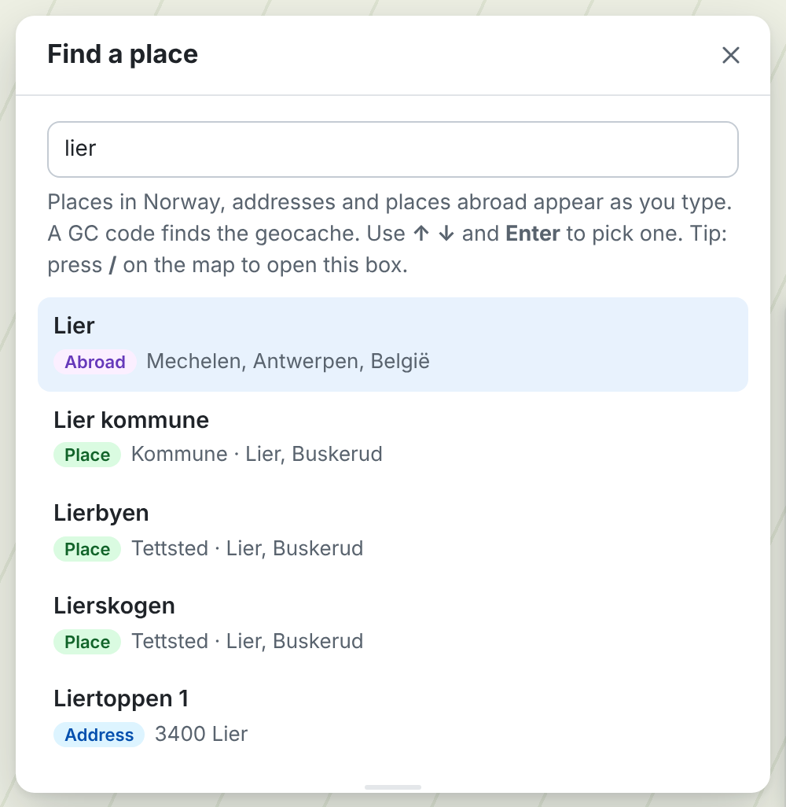
Search results for “lier”.
Click or press /.
All hits appear in one list as you type, each marked with what it is: Place (Kartverket place names), Address (Kartverket addresses) or Abroad (places outside Norway from OpenStreetMap, via Photon). The best matches come first, whatever the source: exact names, then names starting with what you typed, then names containing it. Type a house number and addresses come first.
The map zooms to a level suited to the hit: county, municipality, village, address – or the whole area of a place abroad.
Coordinates in DMM, DD, DMS or UTM (e.g. 32V 597980 6643119) are recognised and shown in other formats at the top of the list.
A GC code (e.g. GC1AAA) finds the geocache: its posted coordinates, and your solved coordinates first when you have them. Unknown caches are looked up on their cache page.
Use ↑↓ and Enter to choose. The chosen place gets a pin with its name.
Home address
The button takes you to your home address. The first time, it opens Set home address – the same search box: type your address and pick it. After that a click goes straight home and marks the spot with a pin named Home – the address itself is never shown on the map. To change or remove the address, right-click the button, or right-click anywhere on the map and choose Set as home. The address is stored only in your browser. In Find a place your home address comes first when you type “home” or “hjem” (from two letters) or part of its name. In the route window it is listed like a pin named Home, among the others by distance, and found the same way.
9. Coordinates
Readout
The coordinates under the mouse are shown at the bottom right on /map and at the bottom left on /play/map (beside the side panel, following it as it opens and closes), with the zoom level above them. Click the coordinates to cycle formats; the choice is remembered. Type a number in the zoom field and press Enter (or use its arrows) to zoom; numbers outside the map's range are adjusted to the nearest level. The ✕ in the readout hides it; show it again in Settings.
in the readout turns on a crosshair in the middle of the map (off by default). The coordinates are then those under the cross: move the map to read them – handy on a touch screen. With the crosshair on, copies the coordinates under the cross to the clipboard, in the format shown. The button opens the right-click menu at the cross – set a point exactly with the crosshair, then open the menu, for example to drop a pin right there. The point is taken from where the cross actually is on the screen. Closing the readout hides the cross too; it comes back when the readout is shown again.
Format
Example (Oslo)
Notes
DMM
N 59° 54.834 E 010° 45.132
Geocaching standard.
DD
59.913900, 10.752200
Decimal degrees.
DMS
N 59° 54′ 50.0″ E 10° 45′ 07.9″
Degrees, minutes, seconds.
UTM
32V 597980 6643119
Zone chosen automatically.
All coordinates are WGS84 (identical to EUREF89 for map use). UTM uses the Krüger series to 6th order (the method used by PROJ), accurate to about a millimetre even far outside a zone. Far west of a zone the easting can become negative – this is correct.
Right-click menu
Right-click anywhere on the map for a popup with the position on one line. It always opens in DMM; click the line to switch to DD, DMS, and UTM (the local zone). The button copies the coordinates in the format shown. The popup also offers:
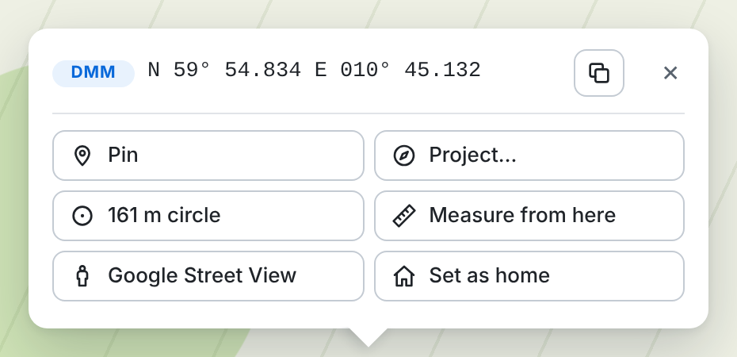
The right-click popup: one coordinate line – click it to switch format.
Pin – drop a named pin (Pin 1, Pin 2 …, or the cache's GC code and name). Right-click or click a pin to remove it or Download GPX, and click its name in the popup to rename it; All pinsas GPX saves every pin in one file for your GPS. Pins are kept while the browser tab is open, and shown from zoom 12.
Add to route – adds the pin or cache you clicked to the route (shown once a route is started, instead of Route from here). This is how stops are added from the map.
Route from here – starts a new route at the pin or cache you clicked (or at a new pin here) and opens the route window, so you can add the rest. Shown only when no route is under way.
Project… – project a waypoint (see below).
161 m circle – a single circle here (or Remove circle inside one).
Measure from here.
Google Street View – opens Street View at this point (or the cache) in a new tab.
Set as home – save this point as your home address.
Snapping to a geocache
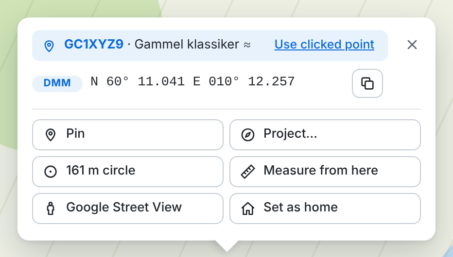
The popup snapped to a geocache – click the GC code to open the cache page.
Right-click on a geocache, or within a few pixels of it (about the size of its icon), and the popup snaps to the cache. A blue line at the top shows the cache's GC code, name and favouritepoints (♥ 42), and the coordinates and all the tools in the popup – pin, projection, measuring, 161 m circle – use the cache position. Your own pins work the same way: right-click one and the popup snaps to it, with Remove pin instead of Pin.
Click the GC code to open the cache page in a new tab (a middle-click works too). The map stays as it is.
Use clicked point switches to the exact point you clicked.
On /play/map the caches are drawn by the site's WebGL map; the script asks it which cache lies under the pointer, which gives the GC code and the exact position. Right-click there opens our popup, not the site's own menu (unless chosen in Settings). On both maps the exact coordinates come from geocaching.com's cache search once it has answered for the area – posted coordinates, or your corrected ones for solved caches. Caches the search leaves out, such as your own, are read from their cache page in the background from zoom 15, or the first time you right-click them (the popup waits up to 0.7 s for it). Until then the position is estimated from the cache icon, shown by ≈ after the name.
Right-clicking the marks at solved caches and physical stages snaps to them too.
Right-click further away and you get the clicked point, as before.
10. Measuring and projecting
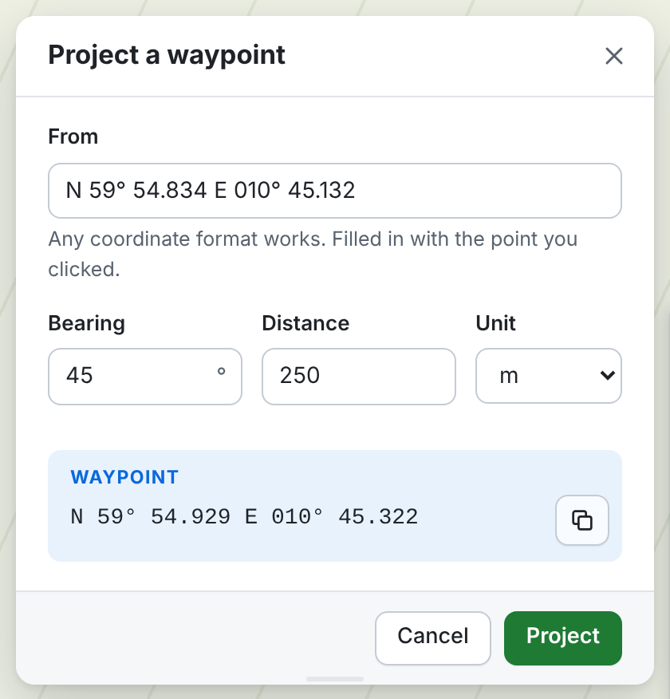
Projecting 250 m at bearing 45°.
Measure : click points on the map. The label shows the total distance and the length and bearing of the last leg. Double-click to start a new line, Esc to stop. While measuring, clicks do not open cache pop-ups.
Project a waypoint: right-click the start point and choose Project…. The dialog Project awaypoint opens:
From – filled in with the point you clicked (DMM). Any coordinate format works, so you can also project from another point.
Bearing in degrees (0–360), Distance and Unit (m, km or ft – the last unit is remembered). A decimal comma works, e.g. 1,5.
As you type, the waypoint is shown in DMM with a copy button, and a dashed line previews it on the map. Invalid values give a clear message, and Project stays greyed out.
Enter or Project places the point: a dashed line from the start, a pin with all coordinate formats and a label with bearing and distance. Cancel removes the preview.
Distances and projections use a spherical earth model – the error is well under a metre at geocaching distances.
11. Routes, cache list and GPXNEW
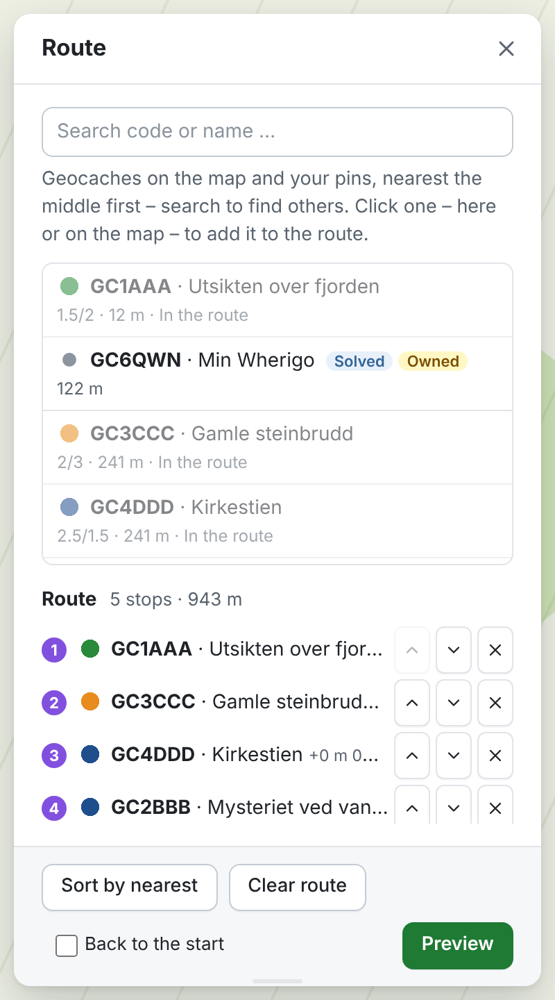
Building a route.
Plan a caching trip on the map and take it with you on your GPS. Click Route in the toolbar.
Pick the stops
The window lists the geocaches on the mapyou see and your pins, nearest the middle first, each with its type icon, D/T, distance and whether it is solved, found or owned. Solved caches are at their solved position. The list follows the map.
Search by GC code or name. A full GC code is found anywhere in the world, also caches the script hasn't seen yet. Place names and addresses are found too, like in Find a place, and can be added as stops without setting a pin.
Click a line to add it.
To add stops from the map:
Right-click a geocache or pin on the map – or press and hold on a touch screen, or aim with the crosshair and use in the coordinate readout.
Choose Add to route in the menu. It is there once a route is started.
An ordinary click on a cache opens the site's own popup, as always – also with the route window open. To start a new route from the map, right-click and choose Route from here – that choice is shown only when no route is under way (empty it with Clear route).
Put them in order
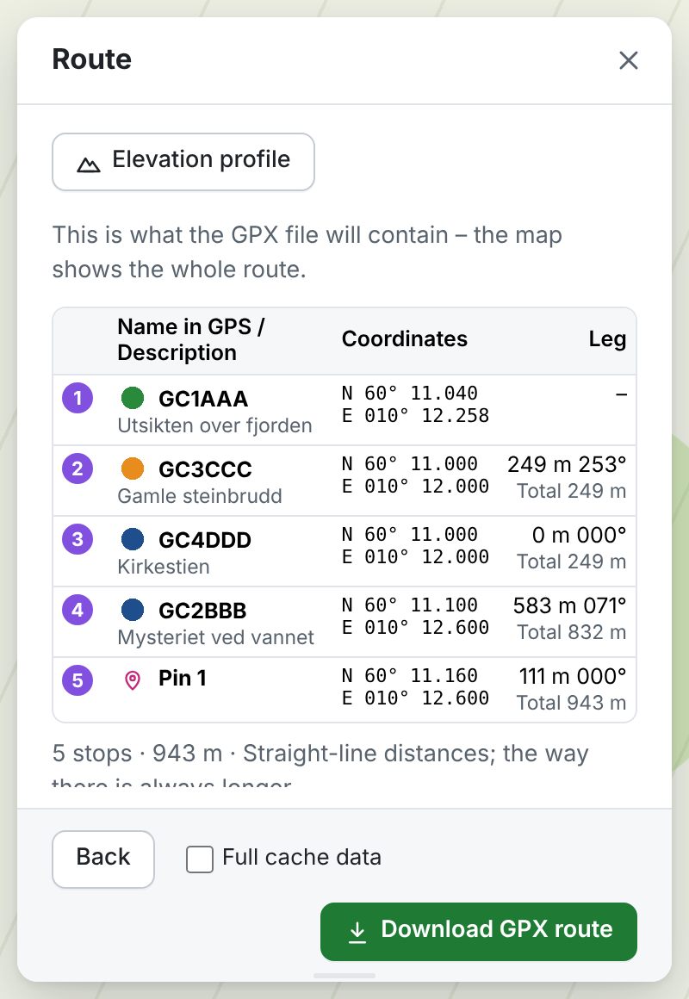
The preview before downloading.
Move stops with ↑ ↓, remove them with ✕, or Sort by nearest from the first stop.
Tick Back to the start for a round trip: the route ends at the first stop again – on the map, in the lengths, in the preview and in the GPX file.
Each stop shows the leg from the previous one (distance and bearing), and the route's total length. With an accepted calculated route, each stop shows the distance along it and the time the leg takes instead. Click a stop to see it on the map.
The route is drawn on the map as a dashed purple line with numbered stops, and is kept while the browser tab is open.
Preview and download
Preview zooms the map to the whole route – in the part of the map that the window, the toolbar, the side panel and other controls leave free – and shows exactly what goes into the GPX file: each stop's name in the GPS (the GC code or the pin's name), the cache name as description, the coordinates, the leg and the running total. Then click Download GPX route.
The file is a standard GPX 1.1 route that Garmin and most GPS units can import.
Tick Full cache data (off by default) to include every geocache as a full paperless geocache, in the same format as the GPX file on the cache page (GPX 1.0 with Groundspeak's extension): description, hint, attributes, size, D/T, logs and the cache's additional waypoints, followed by the route. With Premium the cache page's own GPX file is used; otherwise the same is read from the cache page (with the logs shown there). Solved caches get the solved coordinates. It takes a moment, as each cache page is fetched.
Geocaches get Garmin's Geocache symbol (Geocache Found when you have found them), pins the blue pin.
The file is named with the date and time, e.g. route-2026-10-28-121305.gpx, so several routes on one day don't overwrite each other.
Distances are in a straight line – the way there is always longer – until you accept a calculated route (below); then they are measured along it.
The preview has two tabs, as the layers window: The route (calculation, playback, elevation profile and the stops) and Take the route with you. Under Take the route with you you choose how the route comes with you: On your GPS as a GPX file (above) or On Geocaching.com as a list – which shows in the app too – or On paper. Back to the stops takes you back to change the route.
Save as list saves the geocaches of the route, in order, as a list on geocaching.com – it shows up under Lists in the Geocaching app, so the route is with you on your phone. Give the list a name (the suggestion is “Route” with the date and time) and press Save; you get a link to the list. Pins and the calculated route are not included – such a list can only hold geocaches. Saving again makes another list.
The order: geocaching.com shows the list sorted by distance by default. Turn on Ordered list on the list page to see it in the order of the route – that is done there; the script cannot turn it on.
Print (On paper) first asks for a title – as for a list, and the same name is offered for both – and Make the page then opens a page in a new tab with a map of the whole route – the background map you have chosen, the caches, the route with numbered stops and, for a calculated route, the way in colour and where the car or bike is left – the elevation profile, and a table of the stops with code and name, D/T, coordinates, leg, climb and descent and the running total. Print it or save it as a PDF from the browser. Favourite points, D/T and FTF are included when the printed map is at zoom 15 or closer, and the stop numbers stand beside the cache icons. The map is made from the map on screen, which zooms to the route for a moment and is put back.
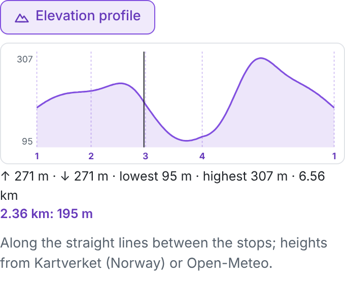
The elevation profile of a round trip.
The window – like all dialogs – can be made taller or shorter by dragging its top or bottom edge, and it fits small screens.
Elevation profile
In the preview, Elevation profile shows the heights along the whole route, with the stops marked by their numbers (a round trip back to the start included). Below it: the total climb ↑ and descent ↓, the lowest and highest point, and the length. Changes under 2 m don't count, so small bumps don't add up.
Without opening the profile, the preview table shows the climband descent of everyleg (e.g. ↑ 43 m ↓ 12 m), and the total for the route below the table – as soon as the heights have come.
Move the mouse along the profile to see the distance and height there – a purple dot shows the same spot on the map.
Heights in Norway come from Kartverket's national elevation model; elsewhere from Open-Meteo (Copernicus, 90 m). The profile follows the straightlines between the stops – or, once a route is calculated, the calculated route.
Route calculationNEW
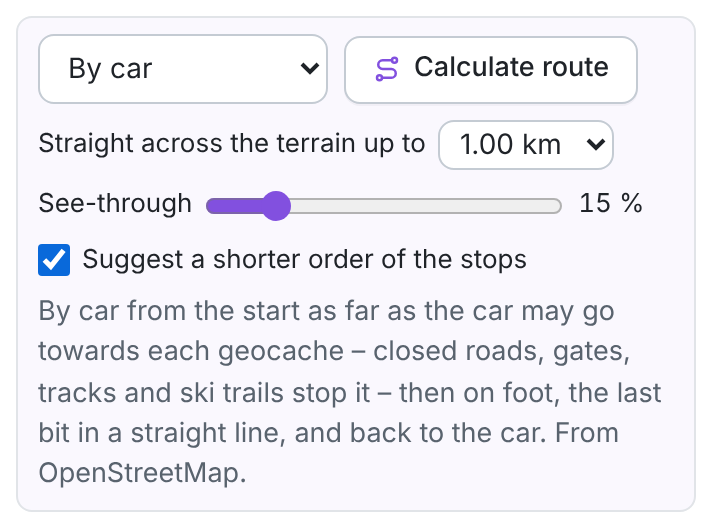
Before calculating.
In the preview, Calculate route works out the way along roads and paths – from OpenStreetMap data. Choose how you travel:
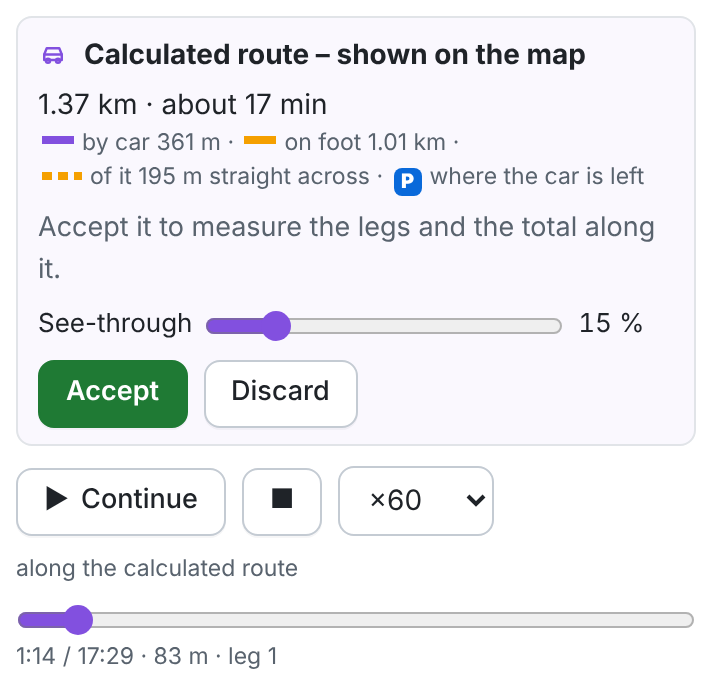
A calculated route, being played back.
By car – driving from the start as far as the roads go towards each geocache, then on foot along paths, the last bit in a straight line from the nearest point on the path, and back to the car. The car never goes onto tracks, paths or ski trails, nor past a gate or onto a road closed to cars; that is where it is left, marked P on the map. Two caches reached from the same spot are walked between; the car is always driven to the end of the route.
By bike – the same, but the bike also goes on closed roads, tracks, cycleways, footways and bridleways – not on paths (unless they are marked for bikes), steps or ski trails. Where the bike route would go far round, the bike may instead be left where the walking route leaves the last road, if that is quicker all in all.
By car and bike – the bike rides on the car: drive as far as the car may go, take the bike off and cycle on as far as a bike may go, walk the rest – and back by bike to the car.
On foot – along roads and paths all the way.
Straight across the terrain up to (never, 100 m … 2 km) sets how far you are willing to leave the path where it goes the long way round; it is only used where going straight across is quicker (off the path at about 1.8 km/h, on it about 5 km/h). The point where you join or leave a path is chosen by time, not just the nearest one. A straight line never crosses water and does not go through built-up areas or farmland – there you walk the streets and roads: the script reads the colours of the map – the even light blue of lakes and rivers, the built-up areas, buildings and farmland – in Kartverket's topographic map (OpenStreetMap's map outside Norway), and goes round instead. If a stop can only be reached across water – a geocache on an island, say – there is no route.
With Suggest a shorter order of the stops on, the script checks whether another order is quicker (the first stop stays first; the last stays last on a round trip or when it is not a geocache). If so, it shows the new order and the time saved, and asks: Change the order or Keep my order.
The calculated route is first only shown on themap – purple by car, green by bike, orange on foot and dashed orange straight across – with the total, the time and how much is driven, cycled and walked; the elevation profile follows it at once. See-through (0–90 %) lets the map show through the route. Accept it (it is then marked ✓ Accepted) to measure the legs and the total along it – with the time of each leg and the running time in the table – and to put it in the GPX file as a track – for any app that follows a GPX track, such as OsmAnd or Locus. The route and the track are named with the date and time to the second, so each has its own name in the GPS. Discard brings back the straight lines; changing the stops discards it too.
Play the route moves you along the route on the map – a car, a bike or a walker – at ×10 … ×600 real time, with pause, stop and a slider to jump; the map follows, and so does the cursor in the elevation profile.
Speeds. The times on roads and paths come from the routing service (OSRM), and the script adds them up:
Car – by road type and speed limit in OpenStreetMap, like an ordinary car navigator.
Bike – about 15 km/h on roads, slower on gravel, tracks and poor surfaces. Where the script itself rides along the walking route, about 14 km/h.
On foot on paths and roads – about 5 km/h.
On foot straight across the terrain – 1.8 km/h, set by the script.
Differences in height are not taken into account, so cycling in hilly terrain is probably reckoned a little too fast. When the script weighs whether to move the car or bike, it adds a minute for parking; that minute is not in the time shown.
Paths are often missing. The route calculation only knows the roads and paths in OpenStreetMap, and in many places most of the paths are not there – the dotted paths on the Norwegian maps come from Kartverket and are often not in OpenStreetMap. Where they are missing, the route can take odd ways: long detours round by the paths it does know, or long stretches straight across. Then raise Straight across the terrain up to, or add a pin where you want the route to go, and calculate again.
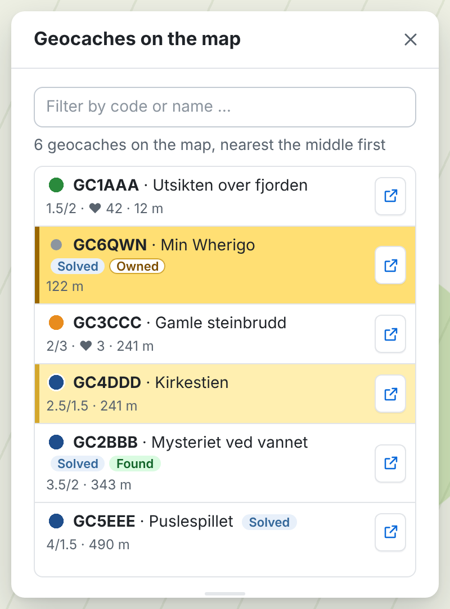
The cache list.
Roads and paths: OSRM (routing.openstreetmap.de); the check of road types, gates and ski trails: Valhalla (valhalla1.openstreetmap.de) and the OpenStreetMap API – all run by FOSSGIS / OpenStreetMap. Water: the map tiles of Kartverket (cache.kartverket.no) or OpenStreetMap (tile.openstreetmap.org).
Cache listNEW
On /mapGeocaches on the map opens a list of the geocaches on the map you see, nearest the middle first. (/play/map has a list of its own.)
Each line has the type icon, GC code and name, Solved, Found and Owned tags, D/T, ♥ favourite points and the distance.
The list follows the map – it changes as you move or zoom, and as the site's cache search answers. It also follows the site's sidebar filters (cache types, My Finds, My Hides, My DNFs) and the button that hides all geocaches. Type in the box to filter by code or name.
Name, D/T, favourite points and tags are fetched from the site's cache search at any zoom while the list is open.
Point at a cache on the map and its line is highlighted in the list.
Click a line to zoom all the way in to the cache, beside the list. It gets a soft yellow glow on the map, and a solved cache you have found gets its mark at the solved spot. Click the same line again to let go of it and return to the map view you had.
The button at the right of each line opens the cache page in a new tab.
The cache list and the route window sit at the top right (default) or top left of the map – choose in Settings – as tall as the map allows. They keep clear of the site's side panel and follow it as it opens and closes, and the two buttons switch between them.
12. 161 m circles
Turn on 161 m circles in Show on map to draw a 161 m (0.1 mile) circle – the minimum distance between caches in the guidelines – around every place where something is placed:
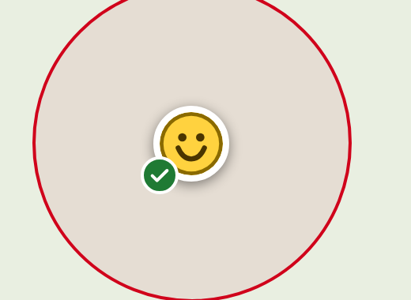
Traditional caches, at their exact posted coordinates.
Caches with solved (corrected) coordinates, at the solved position.
Physical stages and final locations of multis, mysteries, Wherigos and letterboxes that the owner has made visible on the cache page.
Where no cache icon shows the spot, a small clickable mark is drawn in the middle of the circle. The marks at solved caches are turned on and off on their own in Show on map; stage and final marks only appear with the circles.
The mark at a solved cache you have found.
Yellow smiley with a green tick (bottom left), the size of the site's own “found” icon – a solved cache you have found (and don't own): its icon has gone back to the posted coordinates.
Blue round mark with ? – a solved cache whose icon is not on the map right now.
Small blue dot – a physical stage; smallgreen dot – a final location.
Point at a mark to see the GC code, name and Final location; click it to open the cache page in a new tab. Right-clicking it gives the exact coordinates. With favourite points and D/T on, the mark gets them too.
Solved caches are remembered in your browser (60 days), so the mark also appears when the posted coordinates are far outside the map – typical for Wherigos and puzzles. The script learns a cache the first time its posted coordinates are in view from zoom 15.
Solved caches whose icon already sits on the corrected coordinates – your own, and those you haven't found yet – keep the site's icon. An invisible mark on top of it gives the same hover text (Final location) instead of the site's, and clicks still open the site's own popup. The site's “solved” icon doesn't tell the cache type, so a small type icon – the same as in the cache list – can be shown at its bottom right, and on our marks at solved caches you have found (Settings, off by default).
Circles are shown from zoom level 15; the marks at solved caches already from zoom 10 – as blue dots at 10–11, small at 12–13 and full size from 14 (favourite points and D/T from 15). They follow the map as you pan and zoom, a circle is drawn as soon as any part of it can be in view, and they never block clicks on caches.
Single circles anywhere: right-click → 161 m circle.
Filters: caches you leave out in the site's sidebar on /map – My Finds, My Hides or cache types – lose their circles, marks and favourite points too, and get them back when the filter is turned on again. Your own caches are recognised by their owner name (compared in your browser only). Hide all geocaches hides the circles as well.
How the cache types are found: the map itself only tells the GC code, so the script asks geocaching.com's own cache search (the one /play/map uses) once for each area you look at, during each visit. The answer gives each cache's type, its exact posted coordinates, whether you have found it, and any coordinates you have corrected. If the search needs your login, the site's own short-lived access token is used – it is kept in memory only. Cache types are remembered in the browser; solved coordinates are fetched again on each visit, since you can change them.
How the stages are found: the map does not show additional waypoints, so the script reads the Additional Waypoints list on the cache page of each multi, mystery, Wherigo and letterbox in view – two pages at a time, from zoom 15, and each result is remembered for 14 days. Stages whose coordinates the owner has hidden (???) cannot be found. A physical stage listed without coordinates is taken to be at the posted coordinates; a final without coordinates is not shown.
How the positions are found: on the old browse map the caches are drawn as images, but the site also loads a hidden grid telling which cache covers each 4×4 pixel cell. Until the cache search has answered for an area, the centre of each cache's cells is used – accurate to a few metres. On /play/map the caches are ordinary map markers, and their exact positions are used.
13. Cache pages
On cache pages the small map shows your chosen background map and overlays, with the same dimming and opacity. The map keeps the site's own extent and zoom. Nothing else is added, and the cache page never changes your saved choice.
14. Language
The interface is available in English and Norwegian (bokmål). By default the language follows geocaching.com and the browser (Norwegian if either is bokmål, nynorsk or “no”). Change it with Language / Språk in Settings; the change takes effect immediately and is remembered.
15. Keyboard and mouse
Key / action
Effect
/
Open the search (when not typing in a field).
Esc
Close a dialog; stop measuring.
Drag a dialog's title bar
Move the dialog.
Enter in the projection dialog
Place the projected point.
↑↓Enter
Choose a search result.
+−, mouse wheel
Zoom (Leaflet's own keys).
Right-click on the map
Coordinates and point tools.
Right-click the button
Change or remove your home address.
Double-click while measuring Start a new measuring line.
Click the coordinate readout
Switch coordinate format.
Type in the zoom field, Enter
Zoom to that level (Esc undoes).
Click a mark in a 161 m circle
Open that cache page in a new tab.
Click the GC code in the popup
Open the cache page in a new tab.
Drag in the layer panel, or ↑↓ on it
Change the order of the maps.
16. Troubleshooting
Problem
What to do
A layer shows nothing
Open it with and press Preview on map: the tile counter shows whether tiles load. Check the zoom range and, for WMS, the layer name. Many services only cover certain areas.
“No geocache positions found”
The site may have changed how caches are drawn. Run gcctReport() (below) and send the result.
Right-click does not snap to a cache, or shows ≈
Right-click the cache, then run gcctSnapTest('GC…') with its code: it shows what the script knows about the cache (posted and corrected coordinates, whether the search returned it) and where it can snap.
No circles at a multi's physical stages
Run gcctStageTest('GC…') with the cache's code: it shows the waypoint list the script found on the cache page and the stages it picked out.
No 161 m circles, or “cache types are not known yet”
Run gcctCacheDebug() in the console. It shows whether the cache search answered and which fields it contained – field names and counts only, no values or personal data.
Duplicate or overlapping buttons
Run gcctReport(); its siteButtons list shows how each site button was recognised.
Want the site's own buttons back
Tick Show geocaching.com's own map buttons too in Settings.
Search says a service did not answer
A temporary problem at Kartverket or OpenStreetMap; try again shortly.
Diagnostic report
Open the browser console (F12 → Console) on the map page and type gcctReport(). A compact report is printed and copied to the clipboard. It contains the page, Leaflet version, script version, the site buttons found (with status), a summary of the map's layers and the map panes – no personal data. Errors from the script are logged with the prefix [gcct].
17. How it works
Finding the map
The script starts before the page and catches Leaflet the moment the page defines it. It then recognises the site's map when it is created, or – if the map already exists – the next time the map fires any event. If the app replaces its map (single-page navigation), the script follows. Its own setup only runs after the site has finished its own, and errors never reach the site's code.
Layer stacking
Both the geocaching.com background and the cache icons can be drawn as tiles in the same Leaflet pane. The script never removes the site's layers. It identifies the site's background – from the site's layer switcher, or otherwise as the site's lowest tile layer plus any layer from a well-known map provider – and stacks: site background → your background → your overlays → preview → all other site tile layers, such as the cache tiles (raised to the top). Your background is always fully opaque, and while one of your backgrounds is selected the site's own background is hidden (on /play/map its WebGL map layers are switched off one by one, leaving any cache layers alone), so it cannot show through while your tiles load. Dimming uses a colour filter (invert, darken, invert), which fades the map towards white exactly; no extra elements are added.
Tile seams
With display scaling such as 110 % or 125 % and during zoom animations, browsers can leave hairline gaps between map tiles. The script's own tiles are therefore drawn 1 px larger than the size Leaflet gives them (so neighbours overlap) and with normal blending – Leaflet 1.9's own blend mode would add the overlapping strips up to bright lines. The site's own layers are left exactly as they are.
Site buttons
Small buttons floating over the map are found by what is actually drawn along the map's edges and by real buttons and icons. They are recognised by their text, labels, ids, class names and icon names. Zoom and locate buttons are hidden (the toolbar has them); the site's map-style button is made invisible but stays in place, and the panel opens its menu. Buttons in sidebars or list panels are never touched. As safety rules, only elements near the map's left or right edge are considered, never an element among many similar ones (such as cache icons), and if more than two elements look like the same kind of button, none of them is touched. The search for site buttons only runs while the page loads and when its controls change.
Page form
The /map page is wrapped in one large ASP.NET form. All of the script's buttons are non-submitting, and any form submission started from the script's controls is cancelled, so the page never reloads.
Stored settings
Key (localStorage)
Content
gcct.state
Chosen background and overlays, dimming of the background, opacity of the overlays, site-button visibility, removed built-in maps, toolbar position, favourite-point settings, whether the zoom and coordinates are shown, right-click choice on /play/map, the side of the cache list and route window.
gcct.customLayers
Your own layers.
gcct.fmt
Coordinate format of the coordinate readout (the popup always opens in DMM).
gcct.autoCircles
161 m circles on/off.
gcct.marks
Marks at solved caches on/off (without circles).
gcct.cacheTypes
Cache type for each GC code seen (so it need not be looked up again).
gcct.tab
The layer panel's last tab.
gcct.stages
Physical stages and finals read from cache pages (kept for 14 days).
gcct.solvedCaches
Your solved caches: corrected position, found or not, name, favourite points and D/T (kept for 60 days).
gcct.handoff
The last map's view and whether its side panel was folded, for switching between /map and /play/map (used for 5 minutes).
gcct.dlgPos
Where you last dragged the map layers panel, Find a place, Settings, Help and Show on map.
gcct.panelSels
What the script has learnt about the site's side panel on /map and /play/map (which element and button, and how far it folds), for starting with it folded.
gcct.route
Your route – only for this browser tab (sessionStorage), forgotten when it is closed. gcct.routeLoop and gcct.gpxFull keep the Back tothe start and Full cache data choices the same way.
gcct.pins
Your named pins – only for this browser tab (sessionStorage), forgotten when it is closed.
gcct.lang
Language (en / no).
gcct.home
Your home address (name and position).
gcct.projUnit
Last distance unit used for projection (m / km / ft).
18. Privacy and network use
The script does not collect or send any personal data, and talks to no server of its own. It only contacts:
the tile and map servers of the layers you switch on (or preview);
ws.geonorge.no (Kartverket) for place-name and address search, as you type;
photon.komoot.io (OpenStreetMap data) for places abroad, as you type (from three letters);
a map service's capabilities address when you add a WMS/WMTS layer;
geocaching.com's own cache search for the area in view, when the 161 m circles, the marks or the favourite points are on (to find the cache types, exact positions, favourite points and your solved coordinates);
the cache pages of multis, mysteries, Wherigos and letterboxes in view, from zoom 15 with the circles on, to read their visible physical stages;
the cache page of a single cache when you right-click it and its exact coordinates are not yet known (once per visit);
from zoom 15, the cache pages of caches in view that the cache search left out (typically your own) – two at a time, at most 20 per view, once per visit – to read their exact posted and corrected coordinates;
the cache pages (and, with Premium, their GPX files) of the geocaches in your route, only when you download the route with Full cache data on – three at a time;
routing.openstreetmap.de, valhalla1.openstreetmap.de and api.openstreetmap.org when you calculate a route – only the coordinates of the route are sent – and map tiles from cache.kartverket.no or tile.openstreetmap.org along the straight lines, to see whether they cross water, built-up areas or farmland.
Your location is only requested when you click , by the browser's normal permission prompt. Google Street View is only opened when you click it in the right-click menu.
19. Known limitations
Only map services in Web Mercator (EPSG:3857) can be shown, as geocaching.com's map uses that projection. WMTS layers in UTM tile sets are therefore not listed.
Recognising the site's own buttons and cache positions depends on how geocaching.com builds its pages; a site redesign may require an update (gcctReport() helps).
Physical stages whose coordinates the owner has hidden cannot be found, and the cache page does not say whether something is placed at the posted coordinates of a multi or mystery – use a single circle (right-click) there.
Which caches get a 161 m circle depends on geocaching.com's cache search; if the site changes it, gcctCacheDebug() shows what it sends.
The UTM search box does not accept negative eastings; use degrees for points far outside a zone.
The home address is not read from your geocaching.com profile; you set it once in the script.
Strava heatmaps and mobile-coverage maps are not available as open services.
20. Version history
Version
Changes
1.0
Custom XYZ tile layers on the browse map; Kartverket and other presets.
1.1
Coordinate readout (DMM/DD/DMS/UTM), go to coordinates, measuring, 161 m circles, projection, location, fullscreen.
Layers stacked under the cache tiles; site layers never removed; Leaflet 0.7 compatibility; reliable tool clicks; dialogs above the sidebar; no form submits.
1.5
Place, address and coordinate search (Kartverket, OpenStreetMap).
1.6–1.7
More layers (OSM, CyclOSM, Esri Topo, Kartverket routes and property boundaries, hillshade, Waymarked, OpenSeaMap); clearer, more readable dialogs.
1.8
Automatic 161 m circles around every geocache.
1.9
Support for /play/map; diagnostic report.
1.10–1.13
Line icons; one toolbar holding all controls; site buttons folded in without duplicates; collision-free placement.
1.14
Norwegian (bokmål) interface.
1.15
Chosen map on cache pages.
1.16
UTM zone 35; exact UTM conversion (Krüger series).
1.17
Dimming fades to white; the geocaching.com map no longer shines through.
1.18
Search results in one combined list (places, addresses, abroad); places abroad as you type via Photon.
1.19
Remove built-in maps (and restore them); home button; cache tiles at unknown addresses always kept above your map; dimming with a colour filter; safer recognition of the site's buttons and much less scanning; no grid lines between tiles.
1.20
Kartverket Sjøkart, CyclOSM and the Waymarked route overlays removed; one slider per group (dims the selected background, at most 50 %; opacity of the selected overlays); right-click popup with one coordinate line that opens in DMM; no tile seams at display scaling; the site's own locate button on /play/map hidden.
1.21
New, unified look: the same colours, buttons and fields in the panel, dialogs, popup and toolbar; dialogs with a title bar you can drag; projection in its own dialog with live preview, units and copy button; confirmation dialogs instead of the browser's boxes; selected maps highlighted and slider values in per cent; Sea marks (OpenSeaMap) removed.
1.22
The same simple black-and-white line icons everywhere – also in the right-click menu, the layer panel, copy buttons and dialogs – instead of emoji.
1.23
Right-click popup snaps to a nearby geocache, showing its GC code and name (exact on /play/map, estimated on /map); the GC code opens the cache page; the popup is wide enough for every coordinate format, with more room around the copy and close buttons.
1.24
Automatic 161 m circles only around traditional caches and caches with solved coordinates (cache types and corrected coordinates from geocaching.com's cache search); gcctCacheDebug() diagnostic; MIT licence.
1.25
geocaching.com's own maps can be removed from the list too.
1.26
Layer panel in three tabs: Geocaching, Background maps, Overlays.
1.27
Drag maps up and down to change the order; overlays are drawn in the order of the list.
1.27.1–2
geocaching.com's own map is hidden while your background is selected, also on /play/map – it no longer shows through while tiles load.
1.28
Clickable mark at the solved position of caches you have found (their icon is back at the posted coordinates); circles kept when you zoom in.
1.29
Exact posted coordinates from the cache search for right-click snapping and circles on /map; round blue marks.
1.30
161 m circles and marks for visible physical stages and finals, read from the cache pages; gcctStageTest().
1.31
Physical here (161 m) in the right-click menu; circles from zoom 15.
1.32
The zoom level above the coordinates – type a number to zoom. 1.32.2: smoother 161 m circles. 1.32.3: the small map on cache pages keeps the site's extent. 1.32.4: Google Street View in the right-click menu. 1.33.0: button to hide all geocaches.
1.33
Physical here (161 m) removed. Later: overlay slider 50–100 %; exact right-click coordinates for all caches, including your own (read from the cache page); “Final location” when hovering solved caches; finals without coordinates are not shown; gcctSnapTest().
1.34
Toolbar button for the marks at solved caches without circles; stage marks only with the circles.
1.35–1.38
Toolbar on the right, left, top or bottom, in one or two rows, and draggable to another edge; kept clear of the site's search panel; Settings dialog (toolbar, language, site buttons); dialogs and the layer panel open beside the toolbar; the site's zoom buttons are always hidden; toolbar icons in the site's green; toolbar centred along its edge and clear of other controls; dialogs and the layer panel clear of other controls and draggable.
1.39
Favourite points: ♥ and the number in the right-click popup and above caches on the map (from zoom 15, only caches the site shows, from a minimum you choose); zoom and coordinate readout can be hidden; right-click on /play/map opens our popup and snaps to the site's WebGL caches. 1.39.14–25: the sidebar filters on /map (My Finds, My Hides, cache types) also hide circles, marks and favourite points.
1.40
Toolbar button for the favourite points on the map.
1.41
GC codes in Find a place. 1.41.1–9: the toolbar stays centred beside the site's sidebar and wraps to two rows when needed; rounded right end; blue heart in the right-click popup.
1.42
D/T (difficulty/terrain) below the caches on the map, with a toolbar button
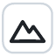
and a setting; dialog buttons stay in view.
1.43
FTF badge on caches nobody has found yet (Settings).
1.44
Right-click snaps to your pins too, with Remove pin in the popup; lighter favourite and D/T numbers.
1.45
Favourite points and D/T at the marks of solved caches you have found; smaller mark; solved caches remembered, so their mark shows even when the posted coordinates are off the map.
1.46
Marks at solved caches from zoom 10: blue dots at 10–11, small marks at 12–13, full marks from 14.
1.47
Named pins, remembered in the browser tab and exported as GPX – one pin or all of them; rename by clicking the name; pins from zoom 12.
1.48–1.50
Routes: a searchable list of geocaches and pins (worldwide by GC code), picking on the map, ordering, preview and download as a GPX route with Garmin symbols; dialogs can be resized by dragging; the layer panel opens beside a centred toolbar.
1.51
Routes: Back to the start (round trip), and Full cache data – the geocaches in the GPX file as full paperless caches in Groundspeak's format.
1.51.1–1.51.9
Route: preview and stops shown beside the window; renamed pins renamed in the route; the window as tall as the screen; time in GPX file names (routes and all pins); Owned tag; the list follows the map.
1.52–1.53
Cache list (/map): the geocaches on the map, following it, with hover highlight, zoom with glow and back again, and a button for the cache page. Cache list and route at the top right or left (Settings), clear of the side panel; route window as narrow as the list; the list follows the sidebar filters and the hide button; the route preview keeps clear of every control.
1.54
Setting to start with the site's side panel folded away – drawn folded from the first moment, without movement; a toolbar on the left sits beside the folded panel's tab and stays centred. Later: 161 m circles for your own caches on /play/map too; extras follow the site's own icons; the cache search is throttled so the site's own search doesn't fail; the layer panel, search and settings open where you left them; a type icon on solved caches (Settings); a smiley mark at solved caches you have found; the marks button independent of the circles; green edge on Route and the cache list while open.
1.55
A tidier interface: the toolbar in groups; Show on map – one panel for circles, marks, favourite points, D/T, FTF and type icons, with the zoom each shows from; Settings in sections; Help; press and hold on touch screens for the right-click menu; measuring snaps to geocaches; Previous view – up to 10 steps back; a crosshair and a copy button in the coordinate readout; UTM as zone, easting and northing (e.g. 32V 597980 6643119), local zone only; the toolbar position remembered separately for /map and /play/map; on /play/map, the site's icon at the posted coordinates of solved caches you have found can be hidden; the coordinate readout at the bottom left on /play/map; a toolbar at the top or bottom always centred; switching between /map and /play/map keeps the view and the side panel; your home address in the searches; an elevation profile for routes, with the climb and descent of every leg in the preview; «Clear route» closes the window; from zoom 15 Search this area on /play/map is pressed for you when you move the map; going home marks the spot with a pin named Home, never the address, and home is listed like a pin in the route window.
1.56
Route calculation along roads and paths – by car, by car and bike, by bike or on foot, with the car (or bike) left where the road ends; a shorter order suggested; preview on the map with parking spots, playback of the route, and – once accepted – legs, total, elevation profile and a GPX track along it. Straight lines never cross water nor go through built-up areas or farmland. Straight bits are drawn dashed. No route to a stop that can only be reached across water. Route from here in the right-click popup. A pin's name never covers a geocache. Time per leg in the route list and running time in the preview. A button in the coordinate readout that opens the right-click menu at the crosshair. Faster popups on /map: the script asks for the site's cache lists once per map tile, not hundreds of times. Clicking a geocache that is already in the route opens the site's popup. Stops are added from the map with a right-click and Add to route; an ordinary click on a cache always opens the site's popup. Save as list on geocaching.com, for the Geocaching app. Print the route with a map and a list of the stops, with a title of your own. Print the map from the toolbar, with a scale bar below the map and optional parallels and meridians. A walk takes the same way there and back.
21. Data sources and credits
Kartverket – topographic maps, Tur- og friluftsruter, Matrikkelen (CC BY 4.0), place-name and address search (Geonorge).
OpenStreetMap contributors – OpenStreetMap, OpenTopoMap (with SRTM); place search abroad via Photon by komoot.
Esri – World Imagery, World Topo Map, World Hillshade.
FOSSGIS – route calculation with OSRM and Valhalla on OpenStreetMap data.
Leaflet – the map library used by geocaching.com.
Each map service has its own terms of use; the credit for the layers in view is shown in the map's attribution line. Geocaching and geocaching.com are trademarks of Groundspeak, Inc. This script is an independent add-on and not affiliated with Groundspeak. The script is released under the MIT licence.
 button opens the right-click menu at the cross – set a point exactly with the crosshair, then open the menu, for example to drop a pin right there. The point is taken from where the cross actually is on the screen. Closing the readout hides the cross too; it comes back when the readout is shown again.
button opens the right-click menu at the cross – set a point exactly with the crosshair, then open the menu, for example to drop a pin right there. The point is taken from where the cross actually is on the screen. Closing the readout hides the cross too; it comes back when the readout is shown again. Google Street View – opens Street View at this point (or the cache) in a new tab.
Google Street View – opens Street View at this point (or the cache) in a new tab.